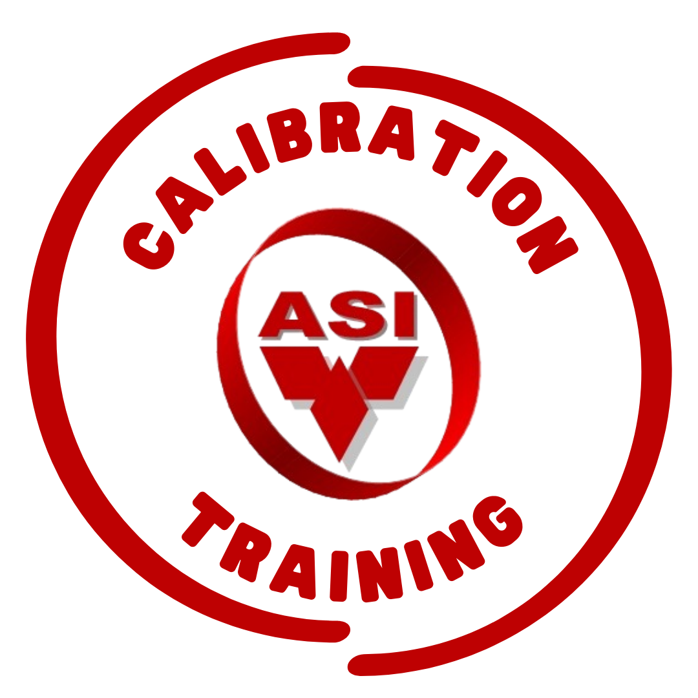
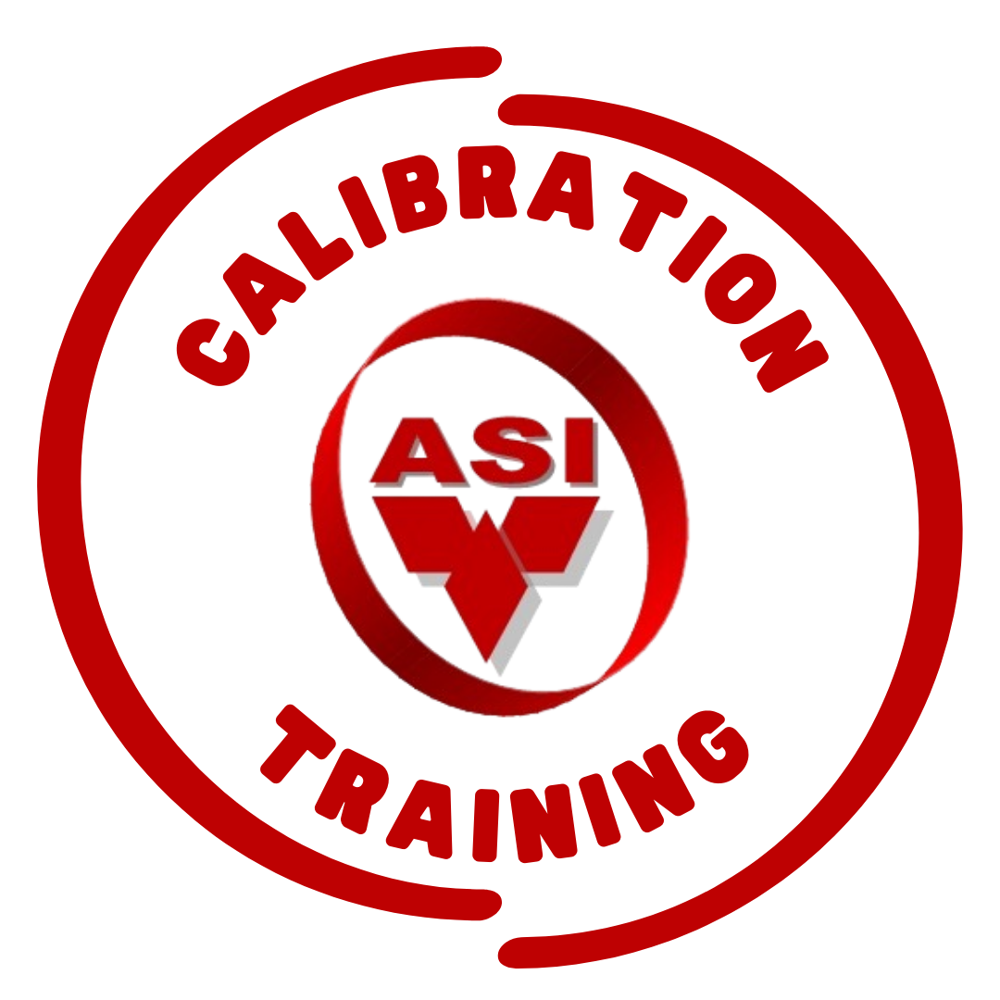

PT. ASMO SUGISIZE INDONESIACALIBRATION, Energy, Oil & Gas, Manufacture and Aero Space
services Solution
services Solution

 

-TEMPERATURE
-MASS
-PRESSURE
-VOLUME
-ANALYTICAL/LAB
-TIME & FREQUENCY
-ELECTRICAL
-FLOWMETER
-DENSITY
-FORCES
-HARDNESS
-TORSION
-DIMENSION
-MT & PT
-UT FLAW
-UTG THICKNESS
-EDDY CURRENT
-RADIOGRAPHY
-NITAL ETCH
-OTHERS; CERTIFIED
ROPE ACCES
-CHROME
-CADMIUM
-NICKEL
-ZINC
-SILVER
-GOLD
-ELECTROPOLISH
-GALVANIZE
-PASSIVATION
ANODIZE:
ALUMINUM
ANODIZING
ENGINEERING:
-FAILURE ANALYSIS
-REMAINING
LIFETIME
ASSESMENT
-APQP/PPAP/FAI
FABRICATION:
-GENERAL
INDUSTRIAL
-STRUCTURES
-PIPING
-TANK
-VESSEL
CNC MACHINES:
-CNC MILLING
-CNC ROUTER
-CNC LATHE